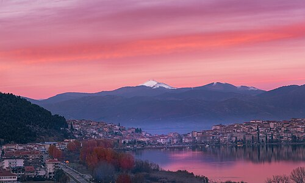

Καστορια
A page about Kastoria, Greece
Kastoria is a beautiful city in Northwestern Greece. It lies on the shores of Lake Orestiada and is surrounded by the mountains of Western Macedonia.

Fun facts about Kastoria
- Built on a Peninsula in a Lake: Kastoria sits entirely on a narrow promontory jutting out into the glassy waters of Lake Orestiada and is surrounded by dramatic limestone mountains.
- A Massive Open-Air Byzantine Museum: Despite its modest size, the city originally boasted over 70 Byzantine and post-Byzantine churches (with more than 50 surviving today), filled with rare and intricate medieval frescoes.
- A Centuries-Old Fur Capital: The name Kastoria is tied to the Greek word for beavers (kastor), reflecting a 500-year-old tradition of fur-crafting and trade that once connected local artisans to global fashion hubs like New York and Leipzig.
Built by Michael Vriheas · BMIS 235